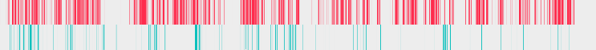
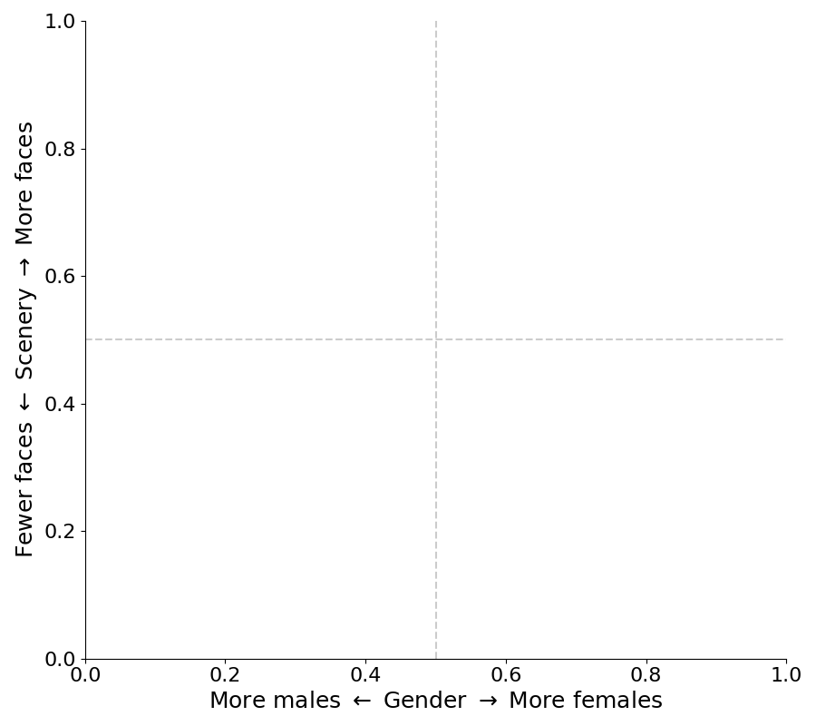
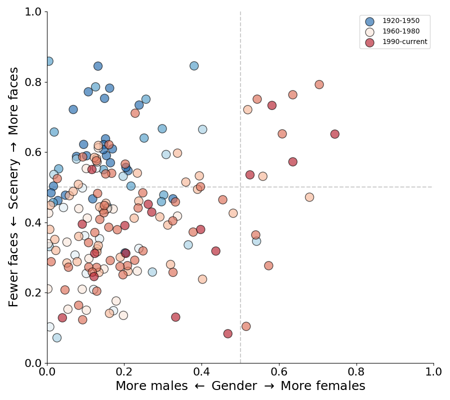
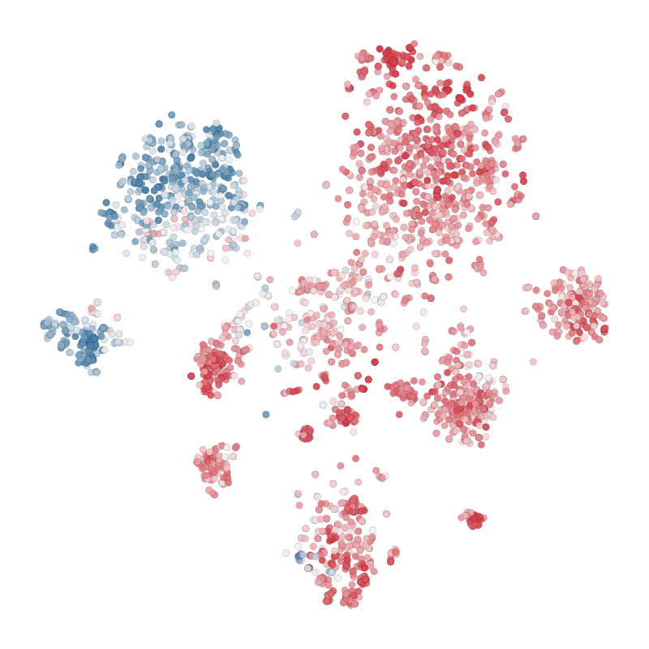
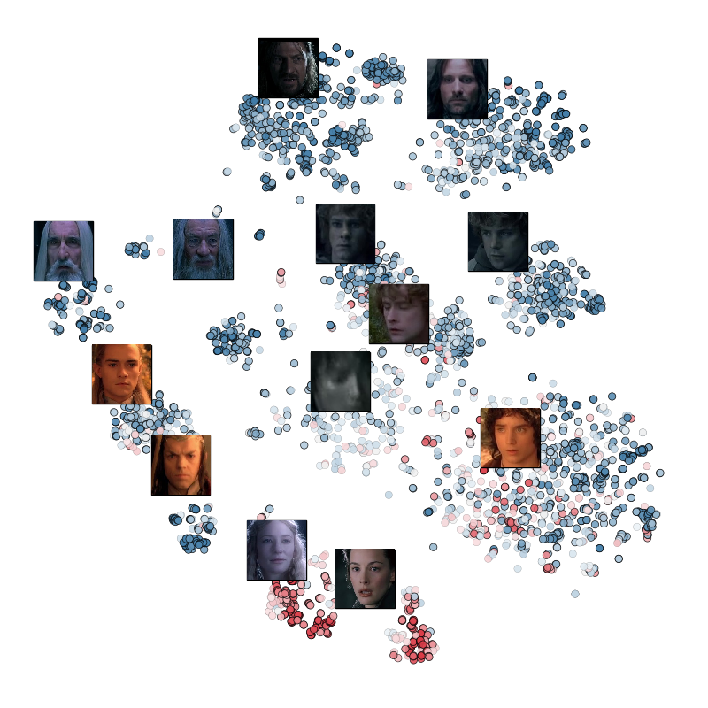

Girls, Interrupted
A computational study of gender in the movies.
Q: Is there a gender disparity in Hollywood?
If so, how much? Can we quantifiy it?
Does this change over time?
Do some movies have more faces than others?
What does it mean to measure gender?
We can only measure gender "expression".
Used model trained on
images
of males and females.
175 movies. 1 frame per second.
Each face must occupy at least 0.15% of the screen.
Gender was recorded only if the classifer has a strong signal.
If gender was indeterminate, only a face was recorded.
12 Angry Men
2001 A Space Odyssey

Clueless
Fifty Shades of Grey
Girl Interrupted

The Godfather

All movies, colored by year. 1930's (blue) to 2017 (red)


Four zones: Old Hollywood, girl comedies, "romance", and male heavy action or landscapes
Rise of the "blockbuster"

Fargo
(1996)
tSNE plots using facial detection landmarks
Inception
(2010)

tSNE plots using facial detection landmarks
Rebecca
(1940)
tSNE plots using facial detection landmarks
LotR: The Fellowship of the Rings
(2001)

tSNE plots using facial detection landmarks